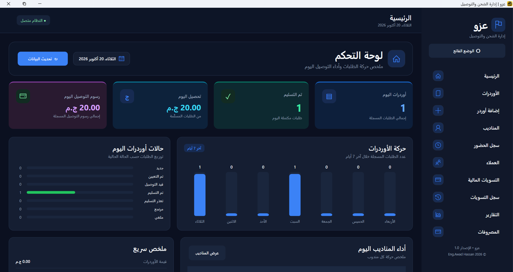
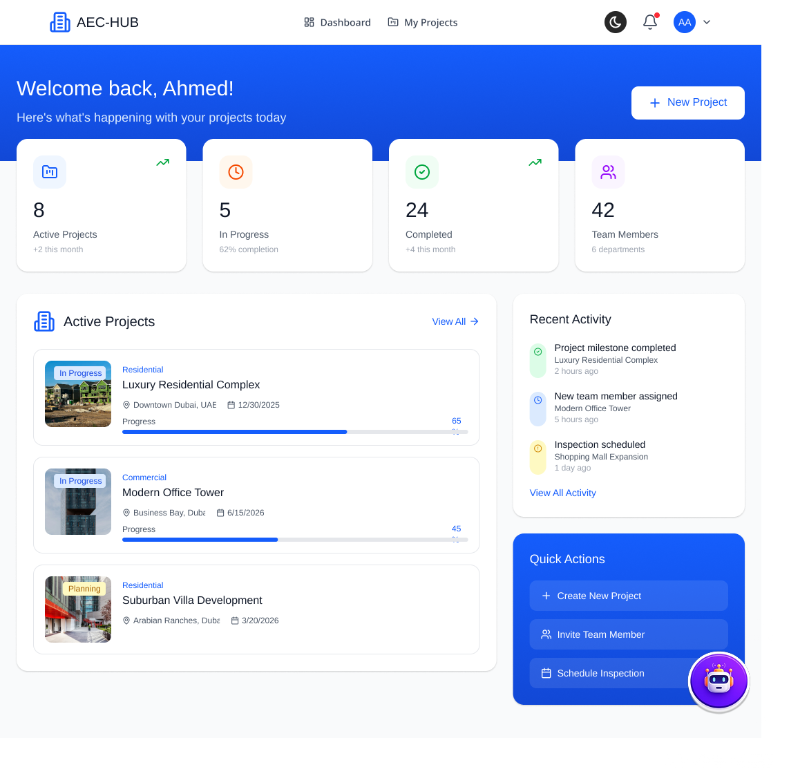

BACKEND DEVELOPMENT
ASP.NET Core, C#, RESTful APIs, and server-side application development.
C# · .NET · ASP.NET CORE
I'm a Computer Science graduate and Junior Backend Developer specializing in C#, .NET, and ASP.NET Core. I enjoy building practical software solutions, designing databases, and developing backend systems that solve real-world business problems.
01 — ABOUT
I'm a Computer Science graduate specializing in Backend Development with C# and .NET. I enjoy designing structured databases, developing RESTful APIs, and building reliable software systems that solve practical business problems.
Through my graduation project and independent software development work, I've gained hands-on experience building backend services, integrating databases, implementing business logic, and developing complete software solutions.
My work includes EZZO, a delivery management system, and BuildWiseAI, an integrated construction management platform. These projects have strengthened my understanding of backend engineering, application architecture, and real-world software requirements.
WHAT I FOCUS ON
ASP.NET Core, C#, RESTful APIs, and server-side application development.
SQL Server, Entity Framework Core, relational database design, and data management.
Clean Architecture, maintainable code, business logic, and practical problem-solving.
I believe good software is not just about writing code. It's about understanding problems, designing reliable solutions, and building systems that people can depend on.
02 — TOOLKIT
A growing toolkit focused on building robust backend applications.
03 — SELECTED WORK
Academic and personal projects, presented with a focus on the problems they address.

A comprehensive desktop solution designed to streamline delivery operations, manage orders, track delivery agents, and monitor financial transactions for shipping offices.

Integrated Construction Management System designed to connect project workflows and improve project visibility.
Role Backend Developer · Backend services and database integration.
Explore the case study ↘An academic concept for organizing inventory, supplier records, and warehouse stock movements. It was not developed as a production application.
Focus Inventory workflows and stock visibility.
PROJECT CASE STUDY · EZZO
Shipping offices coordinate orders, agents, customers, collections, and expenses at the same time. EZZO brings those operational records into one desktop workspace so staff can review activity and keep financial movements visible.
BUSINESS VALUE
Designed to help a shipping office organize daily work, follow each order through its status, and review agent collections alongside office expenses and settlement history.
APPLICATION CAPABILITIES
Capabilities are listed from the supplied application screenshots.
TECHNICAL OVERVIEW
The application is presented as a WPF desktop tool, with the supplied project stack used to organize the interface, persistence, and data access.
GRADUATION PROJECT · 2025–2026
INTEGRATED CONSTRUCTION MANAGEMENT SYSTEM
A centralized platform for construction project work, bringing project records, teams, progress, and timelines into one clear view.
PROJECT AT A GLANCE
The supplied project screens illustrate project summaries, project details, team listings, progress indicators, and milestone timelines. My contribution focused on backend development and database integration, as outlined below.
MY BACKEND CONTRIBUTION
My role focused on backend development and database integration, supporting the web client through an ASP.NET Core API and a SQL Server data layer.
OPEN SOURCE & REPOSITORIES
Visit my profile to explore projects and follow what I’m building.
04 — THE JOURNEY
El Shorouk Academy · Graduated 2026
Explored inventory, suppliers, and stock movements.
ITI · Backend development training
Construction management workflows with backend and database integration.
Server administration, networking, electronic and AI systems.
Professional and technology development program.
05 — CONTINUOUS LEARNING
Continuous learning, practical training, and professional growth.
INFORMATION TECHNOLOGY INSTITUTE (ITI)
60-hour training · MVC, Entity Framework & LINQ, and ASP.NET Core Web API
14–26 September 2025
CAIRO WATER COMPANY
Server administration, networks, and applied electronic and AI systems
18 July–6 August 2026
INNOVEGYPT
45-hour training course and a final project for a potential startup
September 2026
06 — MILESTONES
A few verifiable steps from study to practical software work.
LET’S CONNECT
Have an opportunity, a project, or just want to talk about backend development? I’d be glad to hear from you.